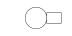

http://orcid.org/0000-0002-3224-8858
http://orcid.org/0000-0002-3224-8858
by Paul Murrell
http://orcid.org/0000-0002-3224-8858
Version 1: Wednesday 23 May 2018

This document
by Paul
Murrell is licensed under a Creative
Commons Attribution 4.0 International License.
This report explores ways to render selective components of a plot in raster format, when the overall format of the plot is vector, using R graphics. An application of this technique involves drawing a large number of raster data symbols within a PDF plot.
A question on R-help (Ronaldo Fisher, "Rasterize plot in PDF output", 2018-01-30) asked about rasterizing just the points within a PDF plot. If a plot has a very large number of points, a fully vectorised PDF document can be very large and very slow to view. If we rasterize the points, the file size is reduced and viewing is much faster. However, the key is to rasterize only the points, so that, for example, the text labels on the plot remain nicely vectorized.
The following code generates an example of this sort of problem.
We are generating an SVG document rather than PDF, because this
is an HTML report, but the
principle remains the same
(and the file size issue becomes even more urgent).
This produces a 'lattice' scatter plot of the diamonds data set
with reference grid lines. We define a panelDefault
function so that we can reproduce the main content of the plot
reliably later on, the grid lines will help us to ensure that we
are reproducing the main content of the plot accurately, and a
label is added at top-left so that we can distinguish between
plots that otherwise are intentionally identical.
## For data set library(ggplot2)
library(lattice)
panelDefault <- function(x, y, ...) { panel.abline(h=seq(0, 15000, 5000), v=0:5, col="grey") panel.xyplot(x, y, ...) }
svg("slow.svg") xyplot(price ~ carat, diamonds, pch=16, col=rgb(0,0,0,.1), panel=function(x, y, ...) { panelDefault(x, y, ...) }) grid.text("slow", x=0, y=1, just=c("left", "top"), gp=gpar(fontface="italic", col="grey")) dev.off()

There are over 50,000 data symbols in this plot and the resulting SVG is over 13MB in size. The image shown above in this report is actually a PNG version (so that the image loads promptly in the report), but clicking on the image will load the SVG version and we can experience just how slow that image is to load and view.
file.size("slow.svg")
[1] 13460366
In the R-help post, it was pointed out that it is possible to
draw a PDF plot in which only the data symbols are rasterized using
Python's matplotlib
(CITE!)
(the plot function in matplotlib
has a rasterized argument).
In this report, we will investigate whether we can do the same sort
of thing in R. Spoiler: the answer is "yes", but there are
some devils in the details.
What we want to do is render most of the plot in a vector format and render just the data symbols in a raster format. A 'lattice' plot is set up quite well for this because we can specify our own "panel function" to draw the data symbols. The following code defines a panel function that opens a PNG graphics device the same size as the 'lattice' panel, sets up a 'grid' viewport with the same scales as the panel, draws the data symbols (just as 'lattice' would have done itself), closes the PNG device, reads the resulting PNG file into R and draws that raster image within the 'lattice' panel.
library(png)
library(grid)
rasterPoints <- function(x, y, ...) { w <- convertWidth(unit(1, "npc"), "in", valueOnly=TRUE) h <- convertHeight(unit(1, "npc"), "in", valueOnly=TRUE) cvp <- current.viewport() dev <- dev.cur() png("temp.png", width=w*72, height=h*72) pushViewport(viewport(xscale=cvp$xscale, yscale=cvp$yscale)) panelDefault(x, y, ...) dev.off() dev.set(dev) raster <- readPNG("temp.png") grid.raster(raster) }
If we use that panel function on the same plot as before, we get the same result, though the points and grid lines are now a raster image. The fact that the (raster) grid lines still align with the (vector) tick marks on the axes tells us that the raster points and lines are an accurate reproduction of the original vector points and lines.
svg("fast.svg") xyplot(price ~ carat, diamonds, pch=16, col=rgb(0,0,0,.1), panel=rasterPoints) grid.text("fast", x=0, y=1, just=c("left", "top"), gp=gpar(fontface="italic", col="grey")) dev.off()

However, because the points and lines in the plot are now a raster image, the file size is now very much smaller (76KB instead of 13MB) and, this time, we can afford to embed the actual SVG image itself in the report because the image loads much more rapidly.
file.size("fast.svg")
[1] 75946
Another way to approach the problem is to draw the entire plot first and then replace the vector content with a raster version. This time, the code draws the complete 'lattice' plot, then navigates to the panel viewport, removes the points and grid lines, and adds a raster version of the points and grid lines (we have just reused the raster from the previous example because the plot is identical).
svg("fast-replace.svg") xyplot(price ~ carat, diamonds, pch=16, col=rgb(0,0,0,.1), panel=function(x, y, ...) { panelDefault(x, y, ...) }) downViewport("plot_01.panel.1.1.vp") grid.remove("abline|points", grep=TRUE, global=TRUE) raster <- readPNG("temp.png") grid.raster(raster) upViewport(0) grid.text("replace", x=0, y=1, just=c("left", "top"), gp=gpar(fontface="italic", col="grey")) dev.off()
Again, the final combination of vector axes and labels plus raster points and lines is much smaller than the complete vector plot.
file.size("fast-replace.svg")
[1] 76721
The package 'rasterize' provides a function
grid.rasterize that generalises and extends
the two approaches described in the previous section.
library(rasterize)
If the first argument to grid.rasterize is a function
then a raster version of the graphical output from the function
is produced within the current viewport. The following code
shows that this can be used within a
'lattice' panel function to generate raster content within
the panel of a 'lattice' plot.
svg("rasterize.svg") xyplot(price ~ carat, diamonds, pch=16, col=rgb(0,0,0,.1), panel=function(x, y, ...) { grid.rasterize(function() panelDefault(x, y, ...)) }) grid.text("'rasterize'", x=0, y=1, just=c("left", "top"), gp=gpar(fontface="italic", col="grey")) dev.off()

If the first argument to grid.rasterize is
the name of a grob (or a gPath), then that grob is
replaced by a raster rendering of the grob.
The following code demonstrates this by first drawing
a 'lattice' plot (with rasterized panel contents)
and then rasterizes the x-axis label on the plot.
Notice that we have to navigate to the viewport
that the x-axis label was drawn within so that the
raster version of the x-axis label is the correct size.
svg("rasterize-label.svg") xyplot(price ~ carat, diamonds, pch=16, col=rgb(0,0,0,.1), panel=function(x, y, ...) { grid.rasterize(function() panelDefault(x, y, ...)) }) downViewport("plot_01.xlab.vp") grid.rasterize("xlab", grep=TRUE) upViewport(0) grid.text("label", x=0, y=1, just=c("left", "top"), gp=gpar(fontface="italic", col="grey")) dev.off()

In the plot above, it should be possible to see that the x-axis label
is a raster version because it looks a little blurry. That is because
the default resolution for the rasterizing process is 72 dpi.
We can control the resolution with the res argument
to grid.rasterize. The following code increases the
resolution up to 200 dpi.
svg("rasterize-hires.svg") xyplot(price ~ carat, diamonds, pch=16, col=rgb(0,0,0,.1), panel=function(x, y, ...) { grid.rasterize(function() panelDefault(x, y, ...)) }) downViewport("plot_01.xlab.vp") grid.rasterize("xlab", grep=TRUE, res=200) upViewport(0) grid.text("hires", x=0, y=1, just=c("left", "top"), gp=gpar(fontface="italic", col="grey")) dev.off()

This ability to rasterize any component of a 'grid' image makes it easy
to produce a 'ggplot2' version of the diamonds plot (with rasterized
points). The following code shows how this might work; notice
that we have to call grid.force after drawing the
'ggplot2' plot in order to gain access to the low-level 'grid' grobs
(and the 'grid' viewports)
in the plot.
svg("rasterize-ggplot2.svg") ggplot(diamonds) + geom_point(aes(x=carat, y=price), alpha=.1) grid.force() downViewport("panel.6-4-6-4") grid.rasterize("points", grep=TRUE) upViewport(0) grid.text("ggplot2", x=0, y=1, just=c("left", "top"), gp=gpar(fontface="italic", col="grey")) dev.off()

The next code shows how we can also produce a 'graphics' version
of the diamonds plot (with rasterized points). In this case,
the important step is to convert the 'graphics' plot to a 'grid'
version, using grid.echo from the 'gridGraphics'
package.
svg("rasterize-graphics.svg") dev.control(displaylist="enable") plot(price ~ carat, diamonds, type="n") abline(h=seq(0, 15000, 5000), v=0:5, col="grey") points(price ~ carat, diamonds, pch=16, col=rgb(0,0,0,.1)) library(gridGraphics) grid.echo() downViewport("graphics-window-1-1") grid.rasterize("points", grep=TRUE) upViewport(0) grid.text("graphics", x=0, y=1, just=c("left", "top"), gp=gpar(fontface="italic", col="grey")) dev.off()

The grid.rasterize function works by
drawing sub-components of a plot on a temporary PNG graphics
device.
The examples in the previous section have been quite simple
at least in the sense that we have only been rasterizing one or two
components of a plot (points plus sometimes grid lines) and
the grobs involved have not been dependent on each other in any way.
This is simple because it means that we can render a raster version
of those grobs just by drawing the grobs themselves.
The following code shows a very small example of a situation that is much more complex. In this drawing, there is only a circle and a rectangle, but the location of the rectangle is based on the right-hand edge of the circle.
svg("fast-dependency.svg", width=2, height=1) grid.circle(r=.3, name="c") grid.rect(x=grobX("c", 0), just="left", width=.2, height=.3, name="r") dev.off()

If we try to rasterize the rectangle in this image, we get an error, because it is not possible to draw a raster version of the rectangle just by itself. We have to draw the circle before we can draw the rectangle.
svg("fast-dependency-fail.svg", width=2, height=1) grid.circle(r=.3, name="c") grid.rect(x=grobX("c", 0), just="left", width=.2, height=.3, name="r") grid.rasterize("r")
Error in (function (name) : grob 'c' not found
dev.off()
It is possible to rasterize more than one grob at once.
In the code below, we specify grep=TRUE and
global=TRUE so that grid.rasterize
will attempt to rasterize any grobs with "r" or "c" in their
names. In this case, we also specify merge=TRUE,
which means that all matching grobs will be rasterized
together in one image and now the rasterization works.
svg("fast-dependency-succeed.svg", width=2, height=1) grid.circle(r=.3, name="c") grid.rect(x=grobX("c", 0), just="left", width=.2, height=.3, name="r") grid.rasterize("r|c", grep=TRUE, global=TRUE, merge=TRUE) dev.off()

However, there will be more complex scenarios where rasterization is not possible because it is not possible to render a subset of the overall image in isolation.
Another issue with grid.rasterize is that, in order
for the rasterized component of a plot to match up with the
vectorized component that it is replacing, and to match up with
the rest of the vectorized plot, the rasterized version of the
image and the vectorized version of the image must be identical,
particularly in the placement of different components (e.g.,
the sizes of plot margins, the dimensions of text, etc).
The easiest way to ensure this consistency in R is to make use
of graphics devices that are based on the Cairo graphics library (CITE!).
For example, the svg device used in the examples in this
report is Cairo-based and this report uses
options(bitmapType="cairo") to ensure that the
png device is also Cairo-based.
For generating PDF output, the cairo_pdf device
would be best, as shown in the following code.
cairo_pdf("rasterize.pdf") xyplot(price ~ carat, diamonds, pch=16, col=rgb(0,0,0,.1), panel=function(x, y, ...) { grid.rasterize(function() panelDefault(x, y, ...), res=150) }) grid.text("pdf", x=0, y=1, just=c("left", "top"), gp=gpar(fontface="italic", col="grey")) dev.off()
Another point to note when working with PDF output is that
the approach of rasterizing specific grobs after the plot has been
drawn will generate multiple pages of output. The replacement of
a grob with a raster rendering of the grob triggers a redraw, which
produces a new page. In this situation, we can create a PDF device
with onefile=FALSE so that multiple pages generate
multiple PDF files, and then we can just use the final page.
The code below demonstrates this idea; the image we want to use
will be called "rasterize-post-2.pdf".
cairo_pdf("rasterize-post-%d.pdf", onefile=FALSE) xyplot(price ~ carat, diamonds, pch=16, col=rgb(0,0,0,.1), panel=function(x, y, ...) { panelDefault(x, y, ...) }) downViewport("plot_01.panel.1.1.vp") grid.rasterize("points", grep=TRUE, res=150) upViewport(0) grid.text("pdf-post", x=0, y=1, just=c("left", "top"), gp=gpar(fontface="italic", col="grey")) dev.off()
This section discusses some alternative approaches to rasterizing
only part of a plot. These approaches have not been implemented
in the 'rasterize' package because, as we will see, they each suffer from
different problems. However, it is useful to record why these
approaches fail (so that we do not revisit them unnecessarily in the
future) and it is useful to remember these approaches because there
may be situations where grid.rasterize fails, but
one of these approaches will succeed.
One change that we could make is to draw the temporary raster image
in memory so that we do not have to touch the file system (when
we create a temporary PNG image). This is possible via the
'magick' package (CITE!). The following code is a variation
on our very first example, but it uses
magick::image_graph rather than the png
device to render the temporary raster image.
library(magick)
magickPoints <- function(x, y, ...) { w <- convertWidth(unit(1, "npc"), "in", valueOnly=TRUE) h <- convertHeight(unit(1, "npc"), "in", valueOnly=TRUE) cvp <- current.viewport() dev <- dev.cur() raster <- image_graph(width=w*72, height=h*72) pushViewport(viewport(xscale=cvp$xscale, yscale=cvp$yscale)) panelDefault(x, y, ...) dev.off() dev.set(dev) grid.raster(raster) }
svg("fast-magick.svg") xyplot(price ~ carat, diamonds, pch=16, col=rgb(0,0,0,.1), panel=rasterPoints) grid.text("magick", x=0, y=1, just=c("left", "top"), gp=gpar(fontface="italic", col="grey")) dev.off()

The 'rasterize' package does not currently use 'magick' because
the results from its image_graph device are not
quite consistent with the Cairo-based devices, so the replacement
raster images do not always align with the rest of the plot.
The grid.rasterize function works by rasterizing
only specific components of a plot. An alternative approach
is to rasterize the entire plot and then just cut out, or crop, the
relevant piece. The following code demonstrates this idea.
The hard part involves calculating which part of the
complete raster should be cropped. At the time of writing,
the deviceLoc
function used in this code is only available in
the development version of R (to become R version 3.6.0).
## External PNG version cropenv <- new.env() png("crop.png", width=7*72, height=7*72) xyplot(price ~ carat, diamonds, pch=16, col=rgb(0,0,0,.1), panel=function(x, y, ...) { assign("panelXY", deviceLoc(unit(0, "npc"), unit(1, "npc"), valueOnly=TRUE), envir=cropenv) assign("panelW", convertWidth(unit(1, "npc"), "in", valueOnly=TRUE), envir=cropenv) assign("panelH", convertHeight(unit(1, "npc"), "in", valueOnly=TRUE), envir=cropenv) panelDefault(x, y, ...) }) dev.off() raster <- image_read("crop.png") rasterCrop <- image_crop(raster, paste0(get("panelW", envir=cropenv)*72, "x", get("panelH", envir=cropenv)*72, "+", get("panelXY", envir=cropenv)$x*72, "+", 7*72 - get("panelXY", envir=cropenv)$y*72), repage=TRUE) cropPoints <- function(x, y, ...) { grid.raster(rasterCrop) }
svg("fast-crop.svg") xyplot(price ~ carat, diamonds, pch=16, col=rgb(0,0,0,.1), panel=cropPoints) grid.text("crop", x=0, y=1, just=c("left", "top"), gp=gpar(fontface="italic", col="grey")) dev.off()

One advantage of this approach is that the image we are rasterizing can be arbitrarily complex; because the entire image is rasterized, we do not have to worry about dependencies between grobs. On the downside, this approach is more sensitive to any discrepancies between a raster version of the plot and a vector version of the plot, as evidenced by the fact that the grid lines are not quite aligned properly in the image above.
Another problem is that this approach will capture all drawing within the cropped region, whether we wanted to rasterize it or not. The following code demonstrates this problem. We have a plot as before, but we add a label that overlaps with the panel data region. This means that (part of) the label is included in the rasterized result even though we only want to rasterize the points and grid lines.
overlapEnv <- new.env() png("temp.png", width=7*72, height=7*72) xyplot(price ~ carat, diamonds, pch=16, col=rgb(0,0,0,.1), panel=function(x, y, ...) { assign("panelXY", deviceLoc(unit(0, "npc"), unit(1, "npc"), valueOnly=TRUE), envir=overlapEnv) assign("panelW", convertWidth(unit(1, "npc"), "in", valueOnly=TRUE), envir=overlapEnv) assign("panelH", convertHeight(unit(1, "npc"), "in", valueOnly=TRUE), envir=overlapEnv) panel.abline(h=seq(0, 15000, 5000), v=0:5, col="grey") panel.xyplot(x, y, ...) panel.text(4, 5000, "A LABEL\nTHAT ALSO\nGETS RASTERIZED") }) dev.off() raster <- image_read("temp.png") rasterOverlap <- image_crop(raster, paste0(get("panelW", envir=overlapEnv)*72, "x", get("panelH", envir=overlapEnv)*72, "+", get("panelXY", envir=overlapEnv)$x*72, "+", 7*72 - get("panelXY", envir=overlapEnv)$y*72), repage=TRUE) overlapPoints <- function(x, y, ...) { grid.raster(rasterOverlap) }
svg("fast-overlap.svg") xyplot(price ~ carat, diamonds, pch=16, col=rgb(0,0,0,.1), panel=overlapPoints) grid.text("overlap", x=0, y=1, just=c("left", "top"), gp=gpar(fontface="italic", col="grey")) dev.off()

Finally, the cropping approach cannot deal with rasterizing
content within a rotated viewport
(but grid.rasterize can).
Yet another approach, that is very similar to the cropping approach, is to generate a raster version of the complete plot and then clip the raster to obtain the rasterized subset of the plot. The following code implements this idea. Notice that we are generating SVG output with the 'gridSVG' package in this example because that is the easiest way to apply clipping to a raster after it has been drawn. By using 'gridSVG' we also make it possible to support rotated viewports (because 'gridSVG' can clip to non-rectangular regions, unlike standard R graphics). However, like the cropping approach, this approach still suffers from the major failing that it will include any overlapping output in the rasterized result.
png("clip.png", width=7*72, height=7*72) xyplot(price ~ carat, diamonds, pch=16, col=rgb(0,0,0,.1), panel=function(x, y, ...) { panelDefault(x, y, ...) }) dev.off() raster <- image_read("clip.png")
library(gridSVG) gridsvg("fast-clip.svg") xyplot(price ~ carat, diamonds, pch=16, col=rgb(0,0,0,.1), panel=function(x, y, ...) { grid.rect(gp=gpar(col=NA, fill=NA), name="vprect") }) cp <- clipPath(grid.get("vprect")) grid.raster(raster, name="raster") grid.clipPath("raster", cp) grid.text("clip", x=0, y=1, just=c("left", "top"), gp=gpar(fontface="italic", col="grey")) dev.off()

The problem we began with was how to rasterize just the points in
scatterplot with lots of points, while still keeping the rest of the
plot in a vector format. We have outline several different solutions,
with a general-purpose solution implmented in the
grid.rasterize function from the 'rasterize' package.
A question that we have left begging is whether this sort of rasterization
is a good idea. It certainly reduces file sizes dramatically, and hence
loading and viewing speeds, but there are other ways of
tackling the problem of having many data symbols.
For example, we can use hexagonal binning (CITE),
or 2D density contours (CITE), or the
smoothScatter function.
One reason for retaining the visibility of all of the individual data symbols is so that we can zoom into the plot to see details in areas of high density (CITE). Another motivation for providing a rasterization facility is to be able to satisfy journal formatting requirements. For example, if a journal demands EPS format figures, but we want to include semitransparent components, we must resort to raster versions of the semitransparent components (CITE).
The original R-help question pointed out that this sort of
rasterization is possible in matplotlib. The
grid.rasterize function solves the original problem
of rasterizing points within a scatterplot, but there are other
things that matplotlib can do.
The matplotlib system has a concept of a "mixed mode" renderer (graphics device) that is able to switch between vector and raster rendering (CITE). This means that matplotlib graphics functions can simply provide a "rasterize" argument to have their output produced in raster format rather than vector format.
This is quite flexible, though it does require rasterization support
to be added to every graphics function (and users are dependent upon
developers to provide that support). The grid.rasterize
approach can rasterize anything that is drawn with 'grid' and does
not require the cooperation of other developers who write functions
that draw with 'grid'.
Another matplotlib feature is the ability to apply rasterization across a range of output by setting a "z-order" limit for rasterization (effectively setting the default value for "rasterize" arguments in graphics functions). This is possible because all drawing in matplotlib can have its z-order (drawing order) specified. In R, 'grid' has no concept of z-order, but the ability to name every piece of output (grob) and then rasterize by name is arguably more flexible.
The 'rasterize' package provides a function
grid.rasterize that can be used to produce rasterized
versions of components of a plot. For example, we can use this
function to produce a scatterplot
that is in an SVG or PDF format, but has rasterized data symbols
(so that the overall size of the plot is much smaller when the plot
contains many data symbols).
The examples and discussion in this document relate to version
0.1 of the 'rasterize' package.
The cropping and clipping approaches rely on the
deviceLoc from the development version of R
(to become R version 3.6.0).
This report was generated within a Docker container (see Resources section below).
Murrell, P. (2018). "Selective Raster Graphics" Technical Report 2018-??, Department of Statistics, The University of Auckland. [ bib ]
This document
by Paul
Murrell is licensed under a Creative
Commons Attribution 4.0 International License.